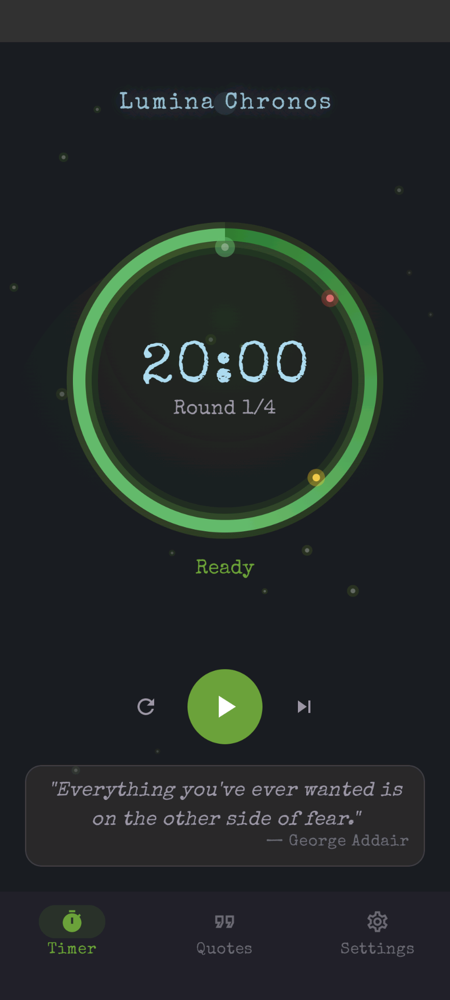
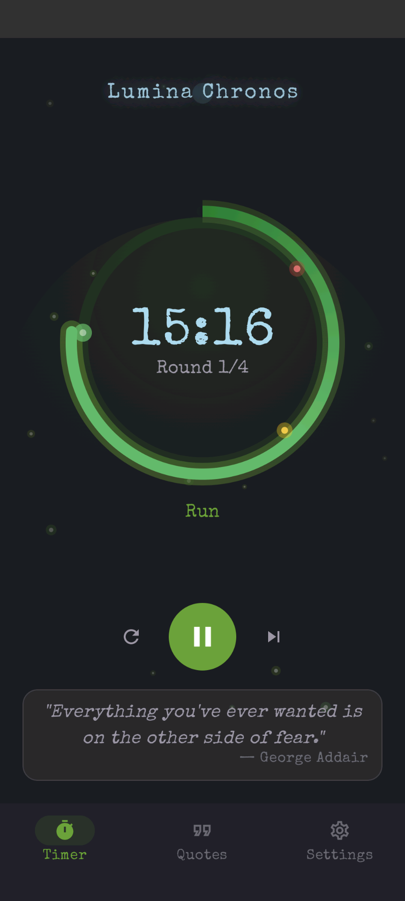
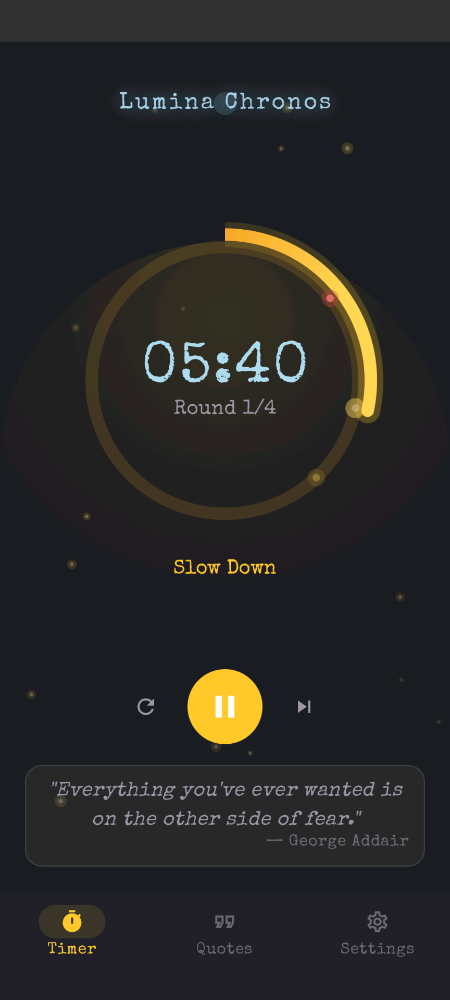
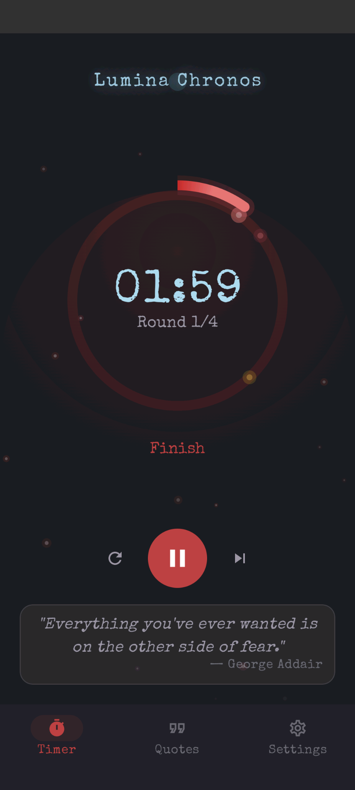
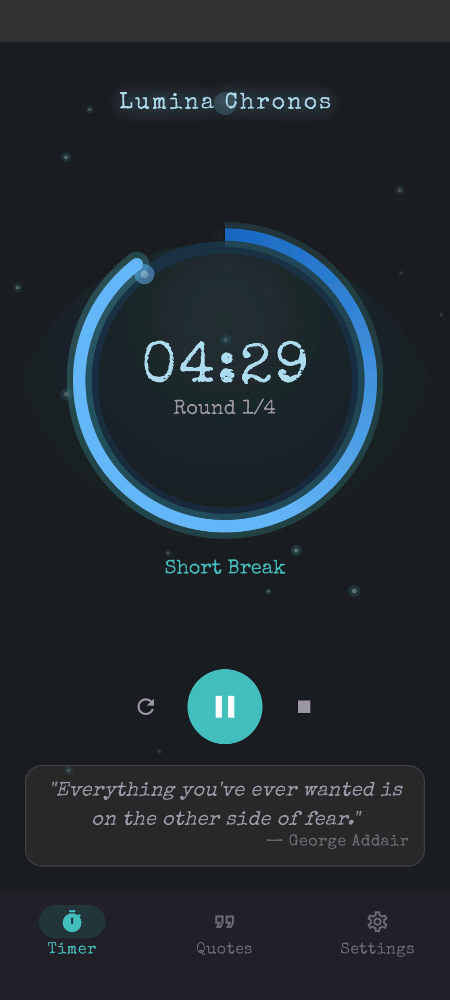
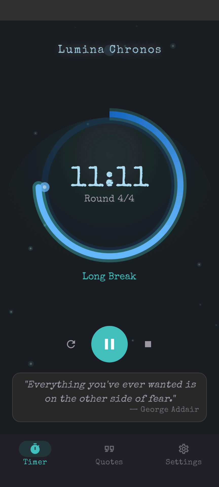
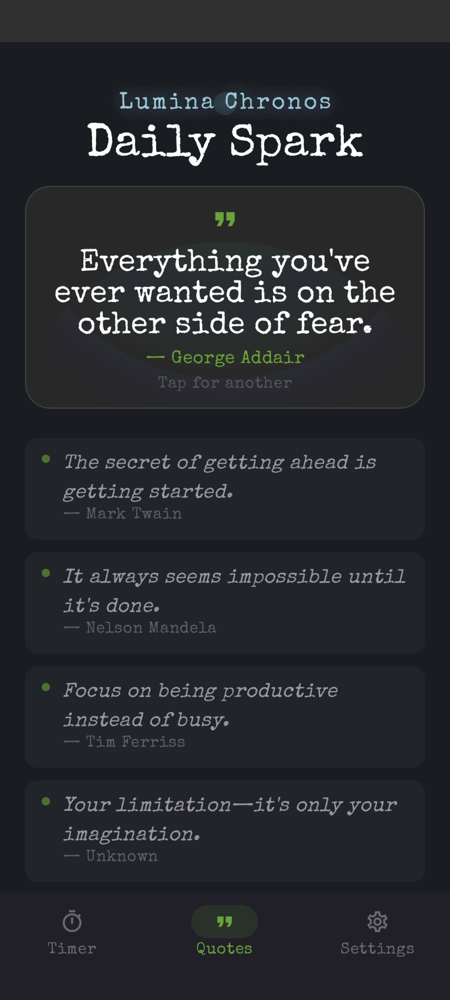
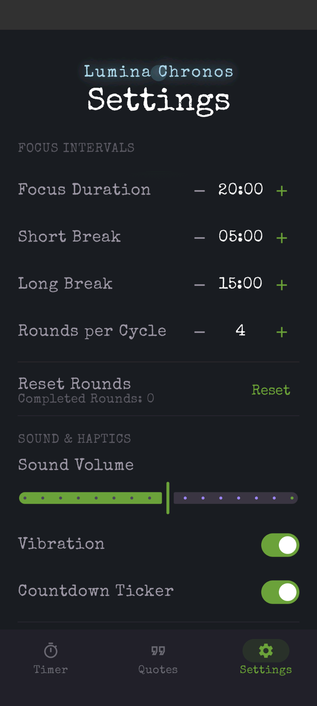

Lumina Chronos
A focused Pomodoro timer for Android. Offline by design — no accounts, no network, no tracking.
What it does
- Color-band progress ring — green flow, yellow Slow Down, red Finish.
- Final-5-second audible ticks so you can finish a thought without staring at the screen.
- Home-screen widget with play, pause, stop, reset, settings, and quotes — backed by a foreground service so it stays accurate while you focus.
- Daily Spark — built-in focus quotes between sessions.
- Pause on minimize, configurable durations, rounds, volume, vibration, auto-start, orientation.
- Verified offline — the manifest declares no
INTERNETpermission at all.
Screenshots

Ready 
Run — green flow 
Slow Down 
Finish 
Short break 
Long break 
Daily Spark 
Settings
Requirements
- Android 8.0 (API 26) or newer
- Phone with a vibration motor recommended for haptic cues
Privacy
No data is collected. No network requests. All settings are stored locally on the device. Read the full privacy policy.